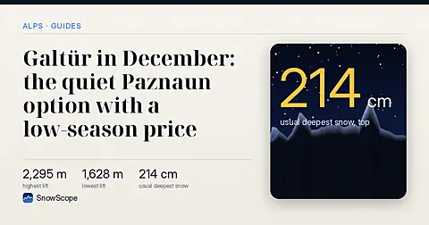
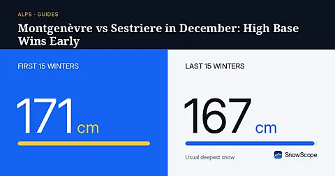
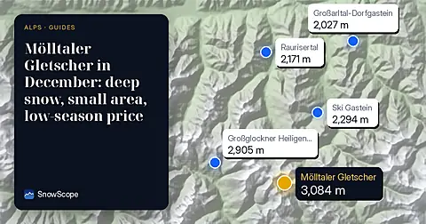
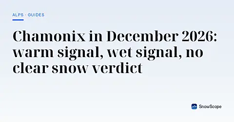
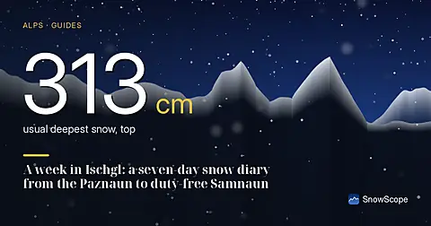
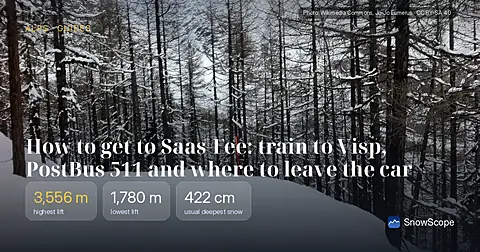
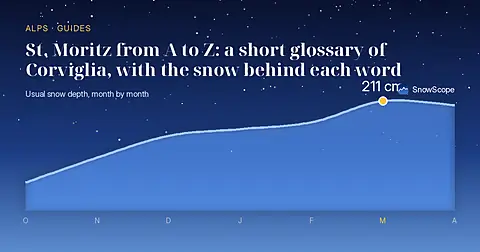
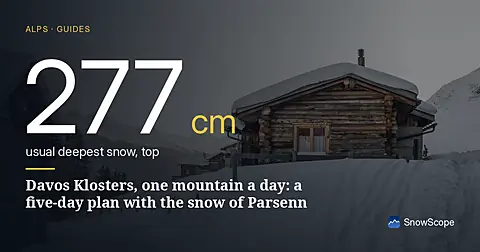

تقارير التلج · جبال الألب
تقارير يومية ديال التلج للي كيتزلجو: فين كاين التلج، شنو جاي، وفين تمشي تتزلج، من الخريطة ديال التلج ديال SnowScope ومحطات القياس. كل رقم جاي من المعطيات ديال داك النهار.
Snow by country today
The whitest countries today: Switzerland (71 %), Austria (60 %) and Italy (33 %).
Most new snow in the week ahead: Switzerland (49 cm), France (38 cm) and Slovenia (37 cm).
التلج اليوم فالمحطات الكبار
- La Grave · 171 سم
- Orelle · 166 سم
- Val Thorens · 166 سم
- Val Thorens · 160 سم
- Les Deux Alpes · 128 سم
- Alpe d'Huez Grand Domaine · 125 سم
- Espace Haute Maurienne Vanoise · 95 سم
- Les Arcs · 92 سم
- Bonneval-sur-Arc · 89 سم
- La Rosière · 88 سم
- Le Grand Domaine · 88 سم
- Les Trois Vallées · 88 سم
- Les Grands Montets · 86 سم
- La Thuile ski · 84 سم
- Les Ménuires · 81 سم
- Zugspitze · 81 سم
- Courmayeur · 80 سم
- Paradiski · 80 سم
- Saint François Longchamp · 78 سم
- Valmorel · 78 سم
- Brévent/Flégère (Chamonix) · 74 سم
- Courchevel · 74 سم
- Glacier 3000 · 74 سم
- Méribel · 74 سم

Krvavec فدجنبر: النهار ب 47 EUR و 6 أيام ب 205 EUR، ولكن غير 13 سم فالوسط نهار 15 دجنبر عادي، و 11 شتوة من 46 بلا تلج فهاد النهار.

تزلج ف 157 كم ديال البيست ف Serre Chevalier، فين القمة ديال الجبل عندها 100 % ديال الاحتمال يكون فيها التلج ف نص دجنبر.

Turracher Höhe فدجنبر: 23 سم فالوسط نهار 15 دجنبر عادي، 39 % ديال الشتوات فيهم 30 سم قبل نوال؛ 6 أيام فالموسم الهادي ب 353 EUR.

Hochkar فدجنبر: السكيباس ديال نهار شفناه من 32,90 حتى 47,90 EUR حسب التاريخ؛ 38 سم فالوسط نهار 15 دجنبر عادي، ونازل من الثمانينات.

عشرة محطات ديال التلج فـ أوروبا مصنفين على حساب القيمة فـ ديسمبر، كيتصدروهم Les 2 Alpes بـ 75 سم ديال التلج فـ وسط الجبل.

Orcières Merlette كتوفر قاعدة عالية فـ 1826 م و باص ديال 6 أيام من 227 EUR، هادشي اللي كيخليها اختيار موثوق لرحلة ديال التزلج فديسمبر.

واش Alpe d'Huez مزيانة ف دجنبر 2026؟ حنا كنشوفو التوقعات ديال التلج، والثمن ديال 58,00 EUR، وكنقارنوها مع Les 2 Alpes.

السكيباس فسلوفينيا هو الأرخص (Krvavec ب 205 EUR ل 6 أيام)، ولكن التلج الطبيعي فدجنبر قليل تما؛ Lachtal و Hochkar والكلاسيي ديال Möll أحسن.

السكي ف Lachtal فدجنبر: السكيباس ديال نهار 62 EUR، الدراري حتى ل 6 سنين فابور، 46 سم فالوسط نهار 15 دجنبر عادي، ولكن الاتجاه هابط.

سكي فـ 131 كم ديال البيست فـ Forêt Blanche هاد دجنبر بـ فورفي ديال 6 أيام بـ 298 EUR.

ف Monterosa Ski الباص ديال النهار أونلاين ما بين 40.00 و 71.00 EUR. فدجنبر التلج كاين الفوق: 124 سم عادة ف 3030 م، و 6 سم ف 1207 م.

Fellhorn/Kanzelwand فدجنبر: 63 سم فالفوق (1965 م) نهار 15 دجنبر عادي، 10 سم لتحت؛ 6 أيام ديال Advent ب 344,50 EUR حتى ل 20 دجنبر.

خطط للرحلة ديالك ف دجنبر 2026 لـ Les Orres وقارن بين تمن البيستات ديال السيمانة والتاريخ ديال التلج اللي عندنا ديال 46 شتوة اللي دازو.

Pitztaler Gletscher فدجنبر: 87 سم فالوسط نهار 15 دجنبر عادي، تلج دجنبر كثر من زمان؛ السكيباس ديال نهار 77 EUR و 6 أيام 410 EUR.

ألمانيا فدجنبر: Zugspitze والفوق ديال Fellhorn كان فيهم 30 سم فنص دجنبر فعلى الأقل 9 شتوات من 10؛ Sudelfeld و Brauneck و Feldberg نادرا.

محطة Puy-Saint-Vincent كاتبازي باجي ديال نهار واحد للبالغين بـ 44 EUR مع تلج صحيح فـدجنبر الفوق، ومقارنة هادي مع الجار الكبير ديالها Serre Chevalier.

كاتوفر غريمنز-زينال 71 كم ديال البيستات وتلج مضمون في العلو للرحلة ديالك في دجنبر، مع باصات ديال 6 أيام بـ CHF 339,00.

النمسا قبل نوال: Galtür ب 258 EUR و Kühtai ب 269 EUR ل 6 أيام، و 30 سم فكثر من 90 % ديال الشتوات؛ الكلاسييات أغلى، والمحطات الصغار مقامرة.

كنديرو تصنيف للمحطات ديال التلج ففرنسا على حساب احتمالات التلج فدجنبر وأثمنة البيست، كيبداو من 36,00 EUR لليوم للكبار فـ Les Karellis.

Galtür فدجنبر: 55 سم فالوسط نهار 15 دجنبر عادي، 93 % ديال الشتوات فيهم 30 سم فنص دجنبر؛ النهار فالموسم الهادي 55,50 EUR حتى ل 18 دجنبر.

Hintertuxer Gletscher فدجنبر: 98 سم ف 3245 م و 52 سم فالوسط نهار 15 دجنبر عادي؛ السكيباس ديال نهار 82 EUR، و 6 أيام 399 EUR.

قارن حظوظ التلج فـ دجنبر وأثمنة الفورفي المراقبة ابتداءً من 40.00 EUR فـ محطات التزلج الإيطالية لرحلة الويكاند بالطوموبيل.

السكي ف Kühtai فدجنبر: 60 سم فالتحت (1939 م) نهار 15 دجنبر عادي، والسكيباس ديال 6 أيام فالموسم الهادي ب 269 EUR حتى ل 18 دجنبر.

Les 2 Alpes كاتوصل ل 3511 م باش تضمن التلج ف دجنبر 2026، مع فورفي ديال 6 أيام للكبار ب 266.50 EUR.

Les Karellis كتوفر 45 كم ديال البيست وواحد الباس ديال 6 أيام للكبار بـ 191,00 EUR مع احتمال ديال 98 % ديال التلج فوسط الجبل فآخر دجنبر.

تزلج فـ Livigno بـ 51,50 EUR للنهار قبل 18 دجنبر، فاش كيوصل العلو ديال التلج فالقمة لـ 30 سم فـ 100 % من الشتوات اللي فاتو.

Montgenèvre عندها 56 سم ديال التلج فالمعتاد فديسمبر فالباز ديالها، وهادشي كيخلي السواق ديال الويكاند يلقاو تلج كتر من Sestriere اللي فجهة خرى ديال الحدود.

السكي ف Obertauern فدجنبر: 43 سم نهار 15 دجنبر عادي فالوسط، والسكيباس ديال 6 أيام ب 331 EUR قبل نوال.

Pila فوق Aosta كتقترح تمن موحد ديال 60.00 EUR للنهار مع تلج مضمون فدجنبر فالجهة الفوقانية.

المحطات ديال Saas-Fee كتوصل لـ 3556 م فين التاريخ ديال التلج ديالنا كيبين بلي 100 % من الشتوات اللي فاتو كان عندهم على الأقل 30 سم ديال التلج فمنتصف ديسمبر.

اكتشف البيستات الهادئة فـ St-Luc Chandolin فين العلو ديال التلج فـ نص الجبل وصل لـ 30 سم فـ 98 % من الشتوات اللي فاتو فـ أواخر شهر دجنبر.

Valloire-Valmeinier كتوفر على 131 كم ديال البيست، واحتمال 98 % يكون العلو ديال التلج 30 سم فـ وسط المحطة فـ نص دجنبر.

Zugspitze فدجنبر: 122 سم ف 2627 م نهار 15 دجنبر عادي، السكيباس ديال نهار أونلاين 70,50 EUR؛ Garmisch-Classic لتحت ب 69 EUR وتلج قل بزاف.

Mölltaler Gletscher فدجنبر: 66 سم فأول تيليسييج (2103 م) و 128 سم فالوسط نهار 15 دجنبر عادي؛ 6 أيام فالموسم الهادي ب 332 EUR.

واش المبتدئ اللي كيخاف يقدر يتيق فـ Courmayeur ف شهر دجنبر، فاش العلو ديال التلج ف الوسط كيوصل ف المعدل لـ 60 سم ف الشتوات اللي فاتو؟

ف 24 شتاء من 46، المحطات اللي فالجهة الإيطالية وجنوب الألب الفرنسية جاتهم شتوية كبر نسبيا من الجهة الشمالية. المبيان، العوام الكبار، والطقس اللي كان موراهم.

التلج فدجنبر كيتعلق قبل كلشي بالعلو. 46 شتوة فاتت ف676 محطة فالألب كيبينو شحال ديال التلج تتسنى نهار 1 و15 و22 دجنبر، من تحت 1200 م حتى لفوق 2400 م.

برنامج رخيص ديال 3 أيام فبحيرة كومو فدجنبر بالأثمنة الحقيقية ديال 2026-27: الترينو، البابور، الفونيكولير والتزلج ف Piani di Bobbio ولا Madesimo، شحال كتوفر مقارنة مع كورتينا، والحظ ديال التلج فالعيد.

التلج ديال اليوم فليفينيو، شنو كيقول التوقع الموسمي الأوروبي على دجنبر، وعلاش العلو كيغلب الشهر السخون نهار 25 دجنبر.

التلج ديال اليوم فكورتينا، التوقع الموسمي الأوروبي لدجنبر، والحظوظ ديالنا باش يكون نهار 25 دجنبر أبيض فالدولوميت الشرقية.

فين دجنبر 2026 غيكون فيه التلج كثر ولا قل فالدولوميت من Val Gardena حتى لكورتينا: التوقع الموسمي الأوروبي، الخريطة ديالنا والحظوظ ديال 25 دجنبر أبيض.

واش الغطا ديال التلج من Écrins حتى للألب البحرية و Piemonte غيتعمر بحال العادة فدجنبر 2026؟ التوقع الموسمي الأوروبي والخريطة ديالنا، جبل بجبل.

التلج ديال اليوم ف Grands Montets، التوقع الموسمي الأوروبي لدجنبر، والخريطة ديالنا فين غيكون التلج كثر ولا قل حدا مون بلان.

Zermatt بالأرقام: فين كيبقى التلج، أضمن الشهور وكيفاش توصل للقرية اللي بلا طوموبيلات، من 46 شتوة اللي فاتت.

واش Verbier مزيانة للمبتدئين؟ إمتى التلج أحسن؟ كيفاش توصل؟ الأجوبة على 4 Vallées و 46 شتوة اللي فاتت.

Sella Ronda من Sëlva ف Val Gardena: الكولات ديال Gardena و Campolongo و Pordoi و Sella بالترتيب، مع التاريخ ديال التلج ديالنا ف 46 شتوة اللي فاتت.

Val d'Isère و Espace Killy للمبتدئين، المتوسطين والمحترفين، مع التلج ديال 46 شتوة اللي فاتت فتلاتة ديال العلوات.

Kitzbühel مشهورة وواطية. شنو كيقولو 46 شتوة اللي فاتو على التلج ف 762 م، 1,377 م و 1,993 م، شنو تبدل، وأشمن سيمانات أضمن.

عشرة ديال النقط العملية لسفرية ديال التزلج ل Livigno: الطرقان، البرد، الحوانت بلا ضريبة، الجوج ديال الجهات والوقت الأحسن للتلج، من 46 شتوة اللي فاتت.

Arc 1600 و 1800 و 1950 و 2000 مقارنين فالتلج، البيستات والطريق، مع 46 شتوة اللي فاتت من التاريخ ديال التلج ديالنا فتلاتة ديال العلوات ف Les Arcs.

من الفلاحة ديال Walser حتى ل Weißer Ring: التواريخ اللي صنعات Lech Zürs، ومن بعد التاريخ ديال التلج ديالنا زمان ودابا، أول خمسطاش من 46 شتوة اللي فاتو مقابل آخر خمسطاش.

شنو الصحيح على La Grave، الجبل ديال برا البيست تحت La Meije: الأرض، السلامة، التلج فكل شهر والاتجاه، من 46 شتوة اللي فاتت.

سبع أيام ف Silvretta Arena، نهار بنهار: فين كاين التلج، إمتى تدوز ل Samnaun، وشنو كيقولو 46 شتوة اللي فاتو على التلج ديال Ischgl ف تلاتة ديال العلوات.

Saas-Fee بلا طوموبيلات: التران ل Visp والطوبيس PostBus 511، الطريق ديال وادي الرون والترينات ديال الطوموبيلات، الباركينغ والطوبيسات فابور.

Alpe d'Huez مقابلة للشمس. كيفاش تنظم النهار بالساعة وبالعلو، مع التلج ديال 46 شتوة اللي فاتت من القرى اللي لتحت حتى ل Pic Blanc.

السلسلة ديالنا ديال 46 شتوة فالألب، 108 نقطة من 667 حتى ل 3872 م: أيام التلج نقصو فكلشي، وبوضوح ف 81 %. شنو تبدل وعلاش.

بورتريه ديال Bonneval-sur-Arc ف Haute-Maurienne: سقوف ديال الحجر، كول مسدود، دومين صغير وتلج غليظ كيفاجئ، من 46 شتوة اللي فاتت فالتاريخ ديال التلج ديالنا.

كيفاش تدوز أول نهار تزلج ف Chamonix، من Grands Montets فوق Argentière حتى ل الوقت المناسب لكل بيست، مع 46 شتوة ديال المعطيات.

Cortina d'Ampezzo بتلاتة ديال الطرق: Tofana، Faloria-Cristallo و Cinque Torri-Lagazuoi، مع 46 شتوة ديال المعطيات فتلاتة ديال العلوات.

Chantarella، Marguns، Piz Nair، White Turf: الكلمات اللي كتسمع ف St. Moritz، مشروحين، وشنو كيقول التاريخ ديال التلج ديالنا ف 46 شتوة اللي فاتت على كل علو ف Corviglia.

Davos و Klosters كيتقاسمو ستة ديال الجبال ديال التزلج. برنامج نهار بنهار، كيبدا ب Parsenn، مع شنو كيقول التاريخ ديال التلج ديالنا ف 46 شتوة اللي فاتت على العلوات ديالو.

إمتى تحجز Courchevel و 3 Vallées، أشمن قرية تختار وفين كيبقى التلج، من 46 شتوة اللي فاتت.

St. Anton و Ski Arlberg طول الشتا: العلو العادي ديال التلج فكل شهر فتلاتة ديال العلوات، من 46 شتوة اللي فاتت.

عام ديال التلج ف Sölden، مرحلة بمرحلة: إمتى كيبيضو الكلاسيي، الويكاند ديال كأس العالم، الوسط الطويل ديال الشتا والسيمانات ديال الربيع، من 46 شتوة اللي فاتو ف تلاتة ديال العلوات.

تلاتة ديال الطرق باش تدوز نهار من Méribel: للشرق نحو Courchevel، للجنوب نحو Val Thorens، ولا فالدار فوق Mont Vallon، مع التلج ديال 46 شتوة اللي فاتت فتلاتة ديال العلوات.